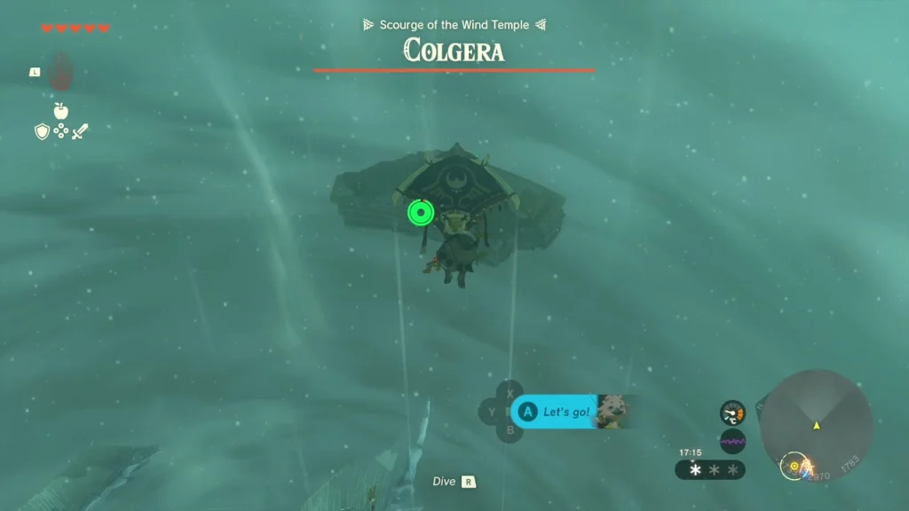
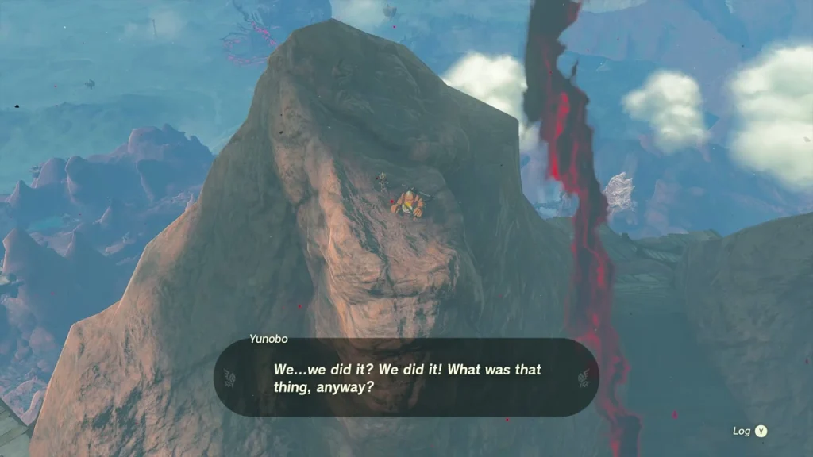
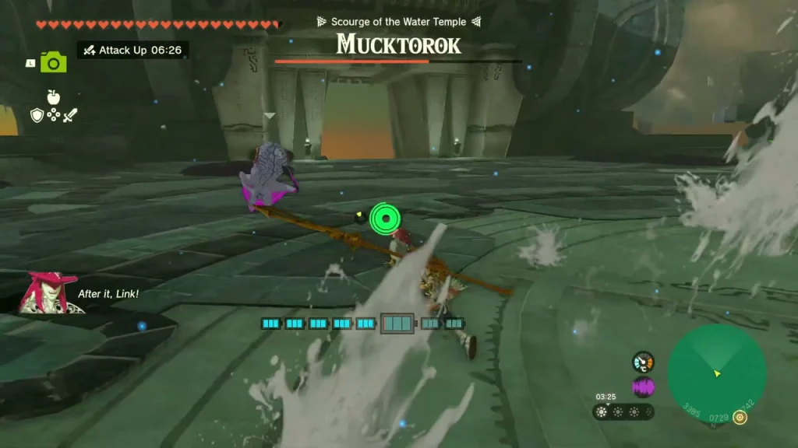
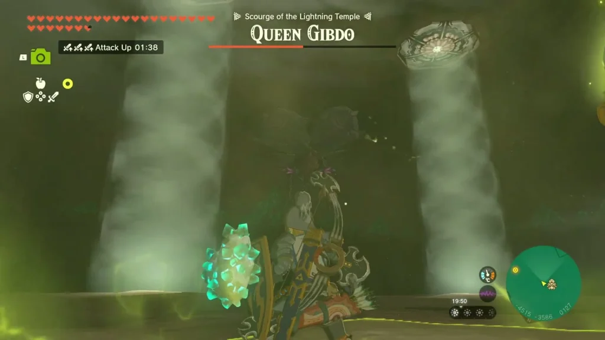

Main Story – 23 nhiệm vụ chính (chi tiết)
Theo thứ tự Zelda Central. Mỗi nhiệm vụ có bước làm chi tiết + mẹo + ảnh. Temple puzzle chi tiết xem trang Temple.
Chi tiết
- Hoàn thành Ukouh Shrine (Ultrahand), In-isa Shrine (Fuse), Gutanbac Shrine (Ascend).
- Nhận Energy Cell.
- Quay Temple of Time, examine glyph → cửa mở một phần.
- Vào trong → pedestal → cutscene → học Recall.
- Dùng Recall trên bánh xe nước phía sau để ra sau temple.
Mẹo: Thu thập 4 Light of Blessing → đổi Heart Container tại Goddess Statue.
Chi tiết
- Nhảy từ Temple of Time, skydive xuống Hyrule Field.
- Đi bộ theo đường chính đến Lookout Landing (trung tâm bản đồ).
- Gặp Purah.
Mẹo: Tránh kẻ địch lớn; nhặt nguyên liệu dọc đường.
Chi tiết
- Nhận Purah Pad.
- Mở Temple of Time (đã học Recall).
- Hoàn thành Nachoyah Shrine (Recall test: chỉnh kim đồng hồ chồng lên nhau cùng chiều).
- Nhận Heart Container từ Goddess Statue.
Chi tiết
- Đến Hebra, Eldin, Lanayru, Gerudo.
- Hoàn thành mỗi Temple (xem Temple).
- Báo cáo Purah tại Lookout Landing.
Thứ tự khuyến nghị: Rito (Wind) → Goron (Fire) → Zora (Water) → Gerudo (Lightning).
Chi tiết
- Nói chuyện Teba & Tulin: Đến Rito Village (Lake Totori, NW Lookout Landing). Cầu chính bị gãy → thả Hylian Pine Cone vào lửa, paraglide theo luồng khí, hoặc build cầu/glide từ Rospro Skyview Tower. Leo lên làng trên nói chuyện Teba, Saki, Tulin. Teba chỉ Harth ở Hebra Trailhead Lodge (~-3581,2252,0141). Kích hoạt Gatakis Shrine trước (di chuyển nhanh).
- Tìm Harth: Theo đường bắc. Lodge được đánh dấu bởi 2 đống lửa. Harth: Tulin đã đi với Laissa & Gesane đến Hebra South Summit Cave. Leo 2 thang sau lodge, theo đường núi, đống lửa, cửa hang (~-3384,2485,0309).
- Tìm trong hang: Nói chuyện Laissa. Dây leo gai → đốt (Fire Fruit). Phòng lớn có luồng khí → paraglide lên. Thắp lại đống lửa lạnh (đá lửa/mũi tên Fire Fruit). Thả Hylian Pine Cone → luồng khí → lối trên. Gesane: Tulin đang hướng đến cây tuyết tùng đơn độc trên Tolonto Peak.
- Tìm Tulin trên Tolonto Peak: Thoát hang, leo về bắc đến cây tuyết tùng đơn độc (~-3152,2688,0567). Dùng luồng gió tự nhiên. Nói chuyện Tulin. Aerocuda đã đánh cắp Swallow Bow. Tulin gia nhập, cho gust.
- Lấy lại cung: Ra lệnh Tulin gust → glide đến bệ. Bắn Aerocuda → rơi cung. Thêm Aerocudas + Bokoblins đến; bắn từ bệ. Harth & Gesane đuổi kịp → điều tra bão phía trên Hebra Peak.
- Leo Hebra Peak: Theo marker lên dốc (các gờ đá vàng). Dùng gust vượt khe. Mở rương trên cấu trúc vàng đầu tiên. Nói chuyện Huck ở đỉnh. Tiếp tục lên các đảo nổi.
- Chuỗi đảo nổi: Lướt + gust. Cánh buồm tàu = bệ phóng. Ascend qua các cột. Kích hoạt Mayaumekis Shrine (rương phía sau trên bệ trái xa qua Ascend). Bệ bóng bay: tấm kim loại + Flame Emitter dưới bóng bay qua Ultrahand. Kích hoạt Kahatanaum Shrine (điểm lưu). Nhiệt độ cực lạnh → kiểm tra kháng lạnh. Lao vào tâm mây → cutscene → Stormwind Ark (Wind Temple).
- Mở 5 khóa: Kích hoạt điểm du lịch trên sàn tàu, kiểm tra terminal gần cửa sập trung tâm. Khóa 1-5 (xem Wind Temple): (1) gắn băng nhũ vào cần gạt để nâng cổng, gust turbine; (2) đi theo luồng khí đến mái tháp, mở tấm, rơi qua laser, paraglider đến lối mở bên, gust; (3) phá băng nhũ, Recall bánh xe quay, gắn băng nhũ giữa bánh răng, gust; (4) glide bên trái vỏ tàu, lối dưới, rơi xuống underside, đánh bại Construct, gust; (5) gust vượt khe, Ascend, gắn phiến đá vào bánh răng, xoay cho đến khi cửa mở, Recall bánh răng, leo qua nhanh, gust turbine cuối. Quay về terminal → mở cửa sập.
- Đánh bại Colgera: 3 tấm băng lớn. Lao qua tấm băng lộ ra để phá; hoặc mũi tên. Pha 2 thêm lốc xoáy → né quanh. Phá cả 3 tấm lại. ~10 phút, sát thương cao. Mang bữa ăn hồi máu không ghi đè kháng lạnh.
- Quay về Rito Village: Nhận Heart Container, nói chuyện Tulin. Teba cho Great Eagle Bow, Tulin = Sage of Wind (Secret Stone). Mayaumekis & Kahatanaum Shrines vẫn là điểm du lịch. Tính vào Regional Phenomena.

Hướng dẫn đầy đủ (Zelda Central)
Chi tiết
- Nói chuyện Bludo: Goron City, Eldin. Bludo gần đống Marbled Rock Roast. Chỉ đến YunoboCo HQ phía bắc. Kích hoạt Marakuguc Shrine.
- Đi đến HQ: Lối ra NE, xe goòng đường ray. Quạt trên xe, ray trái, đi. Hoặc đi bộ đường bộ. Cửa hang: nói chuyện Offrak & Slergo (tùy chọn đầu) → vào trong. Cần Flame Guard (Flamebreaker/fireproof elixir).
- Phá mặt nạ: Yunobo bị đeo mặt nạ, lăn. Né, hắn đâm tường → choáng → đánh mặt nạ. Lặp 3 lần. Yunobo gia nhập, có đòn charge. Nhắm vào các tảng đá đỏ chặn lối ra (2 charge).
- Đi đường ray đến Death Mountain: Phía tây đường ray. Quạt trên xe, đi lên dốc, Yunobo charge phá đá/kẻ địch. Tại ngã ba dùng mục tiêu công tắc xanh. Sitsum Shrine gần đường ray trên. Nói chuyện Yunobo ở đỉnh → Moragia.
- Đánh bại Moragia: Fanplane ở mép miệng núi lửa. Định vị bằng Ultrahand, leo lên, kích hoạt quạt. Giữ cần điều khiển (lăn Yunobo ra trước). Lái về phía mỗi đầu, ra lệnh Yunobo charge. 1 đòn/đầu. Giữ độ cao.
- Đến Fire Temple qua Depths: Lao qua miệng núi lửa, lái đến mặt đất tối. Kích hoạt Mustis Lightroot. Theo marker phía tây, Brightbloom Seeds thắp sáng, tránh gloom, Yunobo phá tảng đá đỏ. Đưa Yunobo vào đá đỏ bịt lối vào. Bên trong: kiểm tra bệ xanh (5 gong). Mang đồ không phải gỗ (gỗ cháy).
- Rung 5 gong: (xem Fire Temple) Gong1 phía nam (Hydrant phiến đá cầu, Yunobo charge barrier), Gong2 phía tây (rails, Recall phiến), Gong3 tây nam (rocket xe, sửa cầu, Recall block lên), Gong4 phía bắc, Gong5 phía bắc 1F.
- Đánh bại Marbled Gohma: Fuse đá vào mũi tên bắn mắt khi mở; khi hạ xuống, đánh chân; né đá. Phần thưởng Heart Container + Vow of Yunobo (Fire). Dọn dẹp nguy hiểm Eldin.
- Quay về Goron City: Báo cáo Bludo. Yunobo trở thành Sage of Fire (Secret Stone).

Hướng dẫn đầy đủ + ảnh (Zelda Central)
Chi tiết
- Đến Zora's Domain (bị sludge phủ khắp nơi).
- Rửa tượng bằng Splash Fruit (ném vào tượng).
- Nói chuyện Yona (Yona đang chăm sóc tượng).
- Đến Mipha Court gặp Sidon (Sidon đang chờ).
- Nhận nhiệm vụ tìm Sidon và giải cứu Zora's Domain.
Mẹo: Mang Splash Fruit nhiều; sludge làm giảm máu tối đa tạm thời.
Chi tiết
- Đến Toto Lake (phía bắc Zora's Domain).
- Rửa bùn ở mảnh phiến của Jiahto bằng Splash Fruit.
- Ghép mảnh phiến vào tường.
- Đọc manh mối về bầu trời (manh mối về Floating Scales Island).
Mẹo: Toto Lake có sludge; dùng Splash Fruit để rửa.
Chi tiết
- Tìm Ancient Arowana (ở Lulu Lake hoặc Zora River).
- Mang Ancient Arowana cho Yona ở Zora's Domain.
- Nhận Zora Armor (cho phép bơi ngược thác).
- Dùng Zora Armor để bơi ngược thác lên Mipha Court.
Mẹo: Ancient Arowana là cá hiếm; tìm ở Lulu Lake.
Chi tiết
- Đến Pristine Sanctum (dưới Zora's Domain, qua lối đi bí mật).
- Nói chuyện King Dorephan → nhận King's Scale.
- Đến Floating Scales Island (bầu trời) bằng Zora Armor + bơi ngược thác.
- Bắn một King's Scale qua stone tear trên Floating Scales Island.
- Stone tear mở → manh mối về bầu trời.
Mẹo: King Dorephan bị thương; Pristine Sanctum là nơi ông ẩn náu.
Chi tiết
- Đến Water Temple: Theo đường: Yona, Jiahto, Sidon → King Dorephan, Floating Scales Island, Ancient Zora Waterworks → nâng nước → thác mở đường đến Wellspring Island. Wellspring Island trọng lực thấp; dùng bong bóng nước (Recall). Leo thác, dùng Wing + thiết bị Zonai vượt đến Sidon. Đánh bại Construct, bơi ngược thác, kích hoạt điểm du lịch.
- 4 Vòi nước: (xem Water Temple) Vòi 1 B1 sau lửa (Sidon shield, Hover Stone ball socket), Vòi 2 bên trái bong bóng nâng (cổng+Hover Stone), Vòi 3 dưới phải tháp quay (mũi tên nước làm sạch công tắc), Vòi 4 trên phải sửa bánh xe (phiến đá mái chèo + dòng bong bóng).
- Đánh bại Mucktorok: Rửa cá mập sludge bằng sóng nước Sidon / Splash Fruit / mũi tên nước, làm choáng bằng mũi tên, tấn công khi choáng, ở nửa máu rải sludge → xóa bằng sóng. Hydrants quanh bệ. Phần thưởng Heart Container + Vow of Sidon (Water). Dọn sludge Zora's Domain.

Hướng dẫn đầy đủ + ảnh (Zelda Central)
Chi tiết
- Đến Gerudo Town: Gerudo Town bị bão cát. Luyện Riju (luyện sét).
- Phòng thủ Kara Kara Bazaar & Gerudo Town: Phòng thủ các đợt Gibdo.
- Giải câu đố ánh sáng 3 trụ: Trụ1 leo lên đỉnh phá sàn nứt → ánh sáng; gương gửi chùm sáng. Trụ2 tháp nhỏ hơn xoay bánh xe ngược chiều kim đồng hồ. Trụ3 phá sàn, sửa bánh xe bằng que + nền nổi, xoay → tam giác hình thành → bàn thờ lộ → nâng Lightning Temple.
- Đuổi Queen Gibdo khỏi lối vào: Sét Riju trên tổ tím phía trên cửa. Queen xuất hiện. Giữ di chuyển (charge, lốc cát). Khi trường Riju sẵn sàng, hút năng lượng, bắn mũi tên vào Queen trong trường → lột giáp. Tấn công, rút lui, lặp lại. Cô rút lui. Sét Riju trên tổ chặn lối vào → phá → vào.
- Đến Room of Ascension: Phòng vào: Korok-Frond Guster thổi cát khỏi công tắc sàn. B1: sàn sập, tia lửa, cầu lửa lăn (Ascend nếu rơi, Recall cầu lửa). Gương góc chùm sáng đến công tắc vàng → cửa. Leo đến Room of Ascension, kích hoạt terminal → điểm du lịch + 4 pin.
- Sạc 4 pin: (xem Lightning Temple) Pin1 phòng ẩn sau terminal (khối sandstone Ultrahand). Room of Natural Light (đá dựng trong chùm sáng + gương, trượt cột). Room of Offered Light (lưới + bệ bóng bay gương). Vượt giếng lửa (glide giữa lửa). Room of Light and Shade (đĩa quay, gương mục tiêu, Stake).
- Kích hoạt thang máy & Boss Queen Gibdo: Quay về Room of Ascension, terminal → thang máy đến 7F. Chuẩn bị hồi máu, vũ khí mạnh, mũi tên với Bomb Flowers/elemental. Chỉ bị thương sau khi bị elemental đánh (sét Riju đáng tin). Giữ di chuyển. Khi tái nhợt, tấn công. Ở nửa máu: 5 lốc xoáy + 4 tổ triệu hồi Gibdos → phá tổ bằng sét Riju/mũi tên Bomb Flower → ánh sáng mặt trời lột giáp Gibdo. Kết liễu Queen. Phần thưởng Heart Container + Vow of Riju (Lightning). Dọn bão cát Gerudo.

Hướng dẫn đầy đủ + ảnh (Zelda Central)
Chi tiết
- Chụp ảnh Ring Ruin tablet (Kakariko).
- Tìm Charged armor (Thunderhead Isles).
- Dâng Zonai Charge.
- Đến Dragonhead Island.
Chi tiết
- Theo beam của mask xuống Depths.
- Rebuild Mineru's Construct (thu thập parts).
- Đánh Seized Construct.
Mẹo: Xem Spirit Temple cho chi tiết boss.
Chi tiết
- Nói Purah, Paya, Tauro.
- Theo Zonai relic trên Dragonhead Island.
- Gặp Mineru (Sage of Spirit).
Chi tiết
- Nhảy vào Hyrule Field Chasm.
- Thắp 2 Lightroots.
- Chụp ảnh statue.
- Nhận Zonaite x5 từ Josha.
Chi tiết
- Theo đường tượng từ Iayusus Lightroot.
- Đến Great Abandoned Central Mine.
- Học Autobuild.
Chi tiết
- Tìm Captain Hoz tại First Gatehouse.
- Báo cáo Purah.
- Nhận Paraglider.
- Kích hoạt Lookout Landing Skyview Tower.
Chi tiết
- Vào Korok Forest qua Depths (Lost Woods).
- Đánh Phantom Ganon.
- Nói Great Deku Tree.
Chi tiết
- Theo marker Light Dragon.
- Phóng từ Skyview Tower.
- Kéo Master Sword từ đầu rồng.
Mẹo: Cần đủ stamina/heart để kéo; làm nhiệm vụ sau khi có đủ.
Chi tiết
- Gặp Impa gần New Serenne Stable.
- Sửa balloon bằng Ultrahand.
- Bay lên glide đến Dragon's Tear → memory.
Chi tiết
- Tìm geoglyphs trên map (nhiệm vụ Impa).
- Mỗi Dragon's Tear cho memory.
- Có 12 tears + 1 hidden (13 total).
Chi tiết
- Xuống dưới Hyrule Castle (chasm).
- Đánh quân đội Phantom Ganon.
- Đánh Ganondorf (pha 1).
- Đánh Demon Dragon (pha 2): bay paraglider, Fuse light vào tên, bắn mắt/sừng.
- Skydive bắt Zelda.
Mẹo: Xem Endgame cho chi tiết boss.